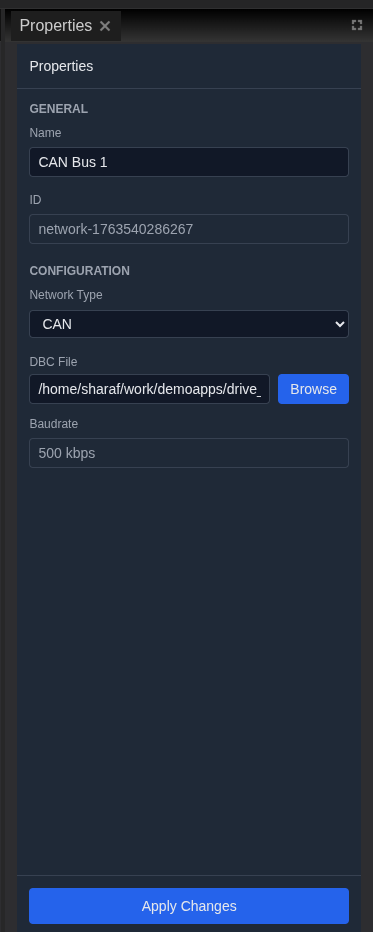
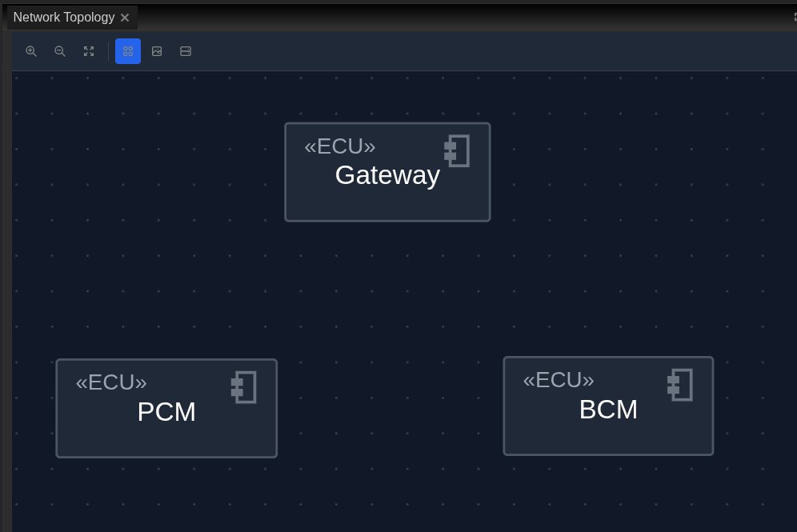
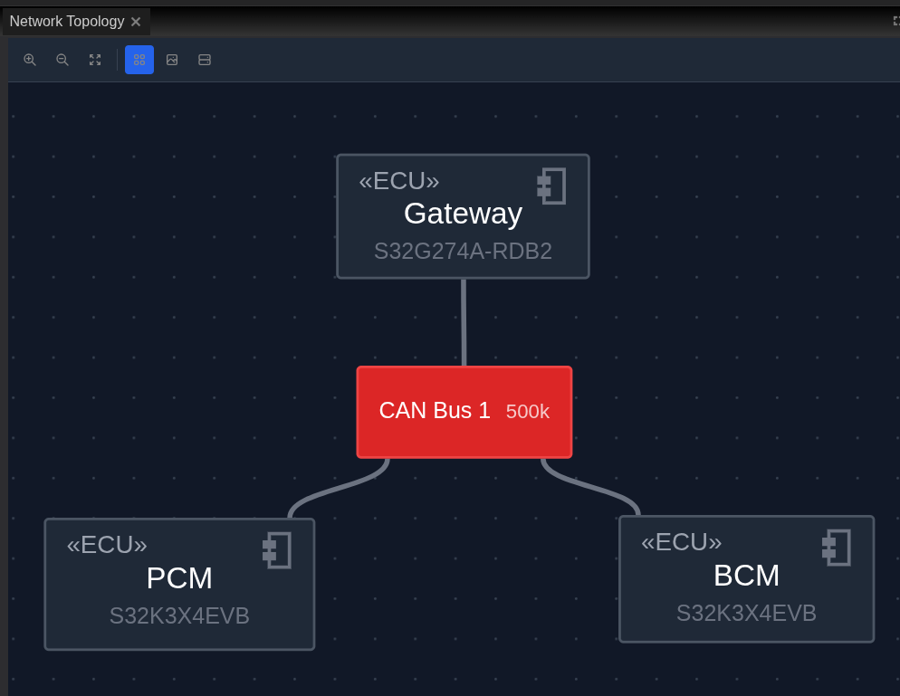
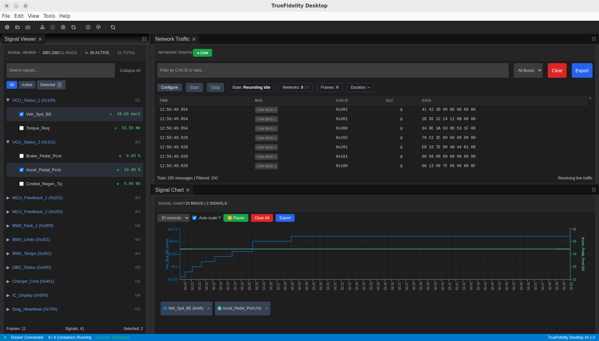
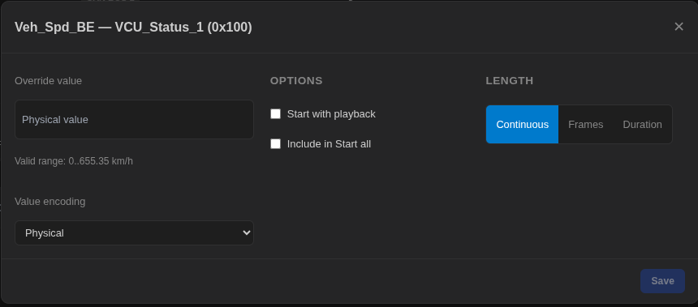
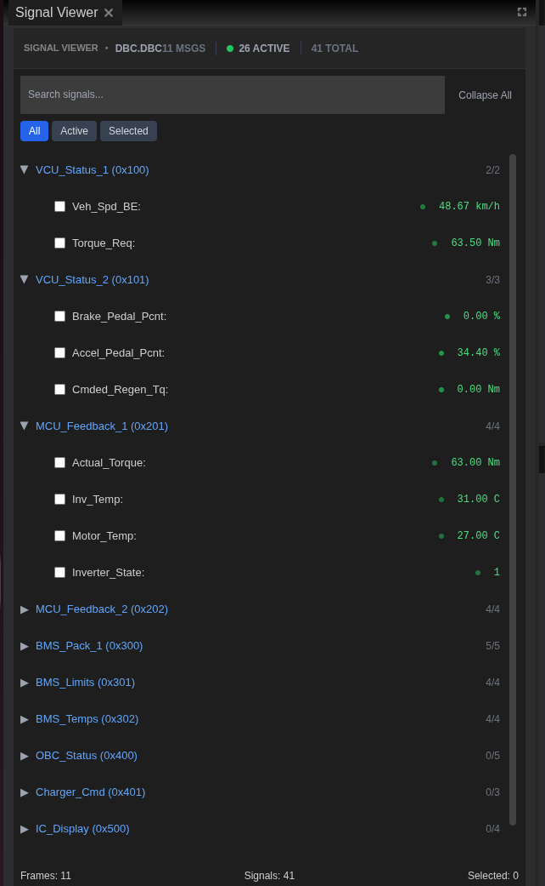
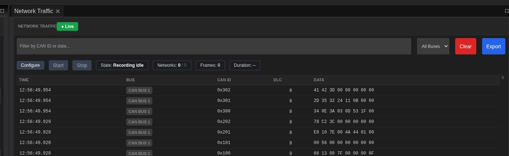
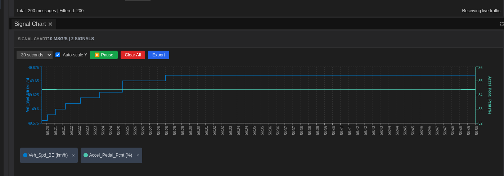

Injection Scenario Walkthrough¶
This comprehensive tutorial demonstrates how to use TrueFidelity's signal injection capabilities to test ECU responses and validate system behavior. You'll learn how to inject CAN signals into a running system, monitor ECU reactions, and document test results. Signal injection is a powerful technique for validating control logic, testing edge cases, and reproducing field issues in a controlled environment.
Time Estimate¶
- System Setup: 10-15 minutes
- Injection Configuration: 10-15 minutes
- Test Execution: 15-20 minutes
- Analysis and Documentation: 10-15 minutes
- Total Time: 45-65 minutes
Prerequisites¶
Before starting this tutorial, ensure you have:
- TrueFidelity Desktop application with a valid license
- Docker Desktop running (or Mock Mode for simulation)
- A configured system with CAN network and ECUs
- DBC file with signal definitions
- Basic understanding of CAN signals and ECU communication
- Sample BLF file for reference data (optional)
Safety Warning¶
⚠️ CRITICAL SAFETY INFORMATION ⚠️
Signal injection can affect ECU behavior and system operation. Follow these safety guidelines:
- Never inject signals into production vehicles or safety-critical systems
- Only use injection on test benches or isolated systems
- Ensure emergency stop procedures are in place
- Verify ECU configurations allow test inputs
- Monitor system behavior continuously during injection
- Have a recovery plan if systems behave unexpectedly
Learning Objectives¶
By completing this tutorial, you will:
- Understand signal injection concepts and capabilities
- Learn to use the Signal Player & Injection panel
- Configure and execute injection tests
- Monitor ECU responses to injected signals
- Analyze system behavior under test conditions
- Document test procedures and results
- Troubleshoot common injection issues
Scenario Overview¶
You're tasked with validating a new suspension controller's response to various road conditions. The controller should adjust damping based on wheel speed and acceleration signals. Your objectives are:
- Create a test system with the suspension controller
- Inject controlled signal patterns
- Verify the controller's damping adjustments
- Test edge cases and error conditions
- Document the validation results
This scenario represents a typical hardware-in-the-loop (HIL) testing workflow used in automotive development.
Part 1: System Preparation¶
Step 1: Create the Test System¶
Set up a system specifically for injection testing.
- Launch TrueFidelity Desktop:
- Start in System Design mode
-
If you have an existing system, save any changes
-
Create a new system:
- Click File → New System
- Name:
SuspensionInjectionTest - Description: "Suspension controller validation with signal injection"
-
Click Create
-
Add the CAN network:
- Drag a CAN Bus from Toolbox to canvas
- Select the CAN bus
- In Properties panel:
- Name:
Chassis-CAN - DBC File: Select
suspension_control.dbc - Baud Rate: Auto-populated from DBC
- Click Apply Changes
- Name:

Step 2: Add Test ECUs¶
Configure ECUs for the injection test.
- Add the Suspension Controller ECU:
- Drag a Generic ECU from Toolbox
- Position above the CAN bus
-
Configure in Properties:
- Name:
Suspension-Controller - Type:
Linux Generic x86_64 - Click Apply Changes
- Name:
-
Add the Signal Generator ECU:
- Drag another Generic ECU
- Position to the left
-
Configure:
- Name:
Signal-Generator - Type:
Linux Generic x86_64 - Note: This ECU will handle injected signals
- Name:
-
Add the Monitor ECU:
- Drag a third Generic ECU
- Position to the right
- Configure:
- Name:
Monitor-ECU - Type:
Linux Generic x86_64 - Note: For observing system responses
- Name:

Step 3: Connect ECUs to Network¶
Wire all ECUs to the CAN bus.
- Connect each ECU:
- Hover over each ECU
- Drag from connection handle to CAN bus
-
Ensure all three are connected
-
Verify in Project Explorer:
- Expand Networks → Chassis-CAN
- All three ECUs should be listed

- Save the system:
- Click File → Save
- Save as
SuspensionInjectionTest.json
Step 4: Build and Deploy¶
Prepare the system for testing.
- Build the system:
- Click Build System in toolbar
- Monitor build console
- Wait for "Build completed successfully"

- Start the system:
- Click Start button
- Wait for all containers to run
-
Status bar shows container count
-
Verify readiness:
- All ECUs show as running
- No errors in console
- System ready for injection
Part 2: Injection Setup¶
Step 5: Switch to CAN Log Analysis Mode¶
Configure the workspace for injection testing.
- Change mode:
- Click View → CAN Log Analysis
-
Layout reconfigures for analysis
-
Understand the layout:
- Signal Viewer (left) - Signal selection
- Network Traffic (center) - Live frames
- Signal Chart (right) - Real-time plotting
- Signal Player & Injection (bottom) - Injection controls

- Focus on injection panel:
- Locate Signal Player & Injection at bottom
- Note the Injection section with controls
- This is where you'll manage injection
Step 6: Understanding Injection Controls¶
Familiarize yourself with injection capabilities.
- Locate injection controls:
- In Signal Player & Injection panel
- Find the Injection section
- Available controls:
- Start all - Begin injection
- Pause all - Temporarily stop
- Stop all - End injection

- Injection options:
- Signal selection for injection
- Value configuration
- Network target selection

- Important limitations:
- Injection sends predetermined signals
- No complex scheduling available
- All selected signals inject simultaneously
- Cannot create custom message templates
Step 7: Select Signals for Injection¶
Choose which signals to inject.
- Open Signal Viewer:
- Click on Signal Viewer panel (left)
-
Shows all signals from DBC
-
Identify target signals:
Search for suspension-related signals:
- Wheel_Speed_FL - Front left wheel speed
- Wheel_Speed_FR - Front right wheel speed
- Wheel_Speed_RL - Rear left wheel speed
- Wheel_Speed_RR - Rear right wheel speed
- Vehicle_Acceleration - Longitudinal acceleration
- Steering_Angle - Steering wheel position

- Select injection signals:
- Check boxes next to wheel speed signals
- Select acceleration signal
-
These will be available for injection
-
Identify monitoring signals:
Signals to observe (not inject):
- Damping_Command_FL - Front left damper setting
- Damping_Command_FR - Front right damper setting
- Damping_Command_RL - Rear left damper setting
- Damping_Command_RR - Rear right damper setting
- Suspension_Mode - Active suspension mode
- Diagnostic_Status - Controller diagnostics
- Select monitoring signals:
- Check these for charting
- Will show controller responses
Part 3: Injection Execution¶
Step 8: Configure Injection Values¶
Set up the signal values to inject.
- Define test scenarios:
Scenario 1 - Normal Driving: - All wheel speeds: 50 km/h - Acceleration: 0 m/s² - Expected: Normal damping
Scenario 2 - Hard Braking: - All wheel speeds: Decreasing from 80 to 20 km/h - Acceleration: -8 m/s² - Expected: Increased front damping
Scenario 3 - Cornering: - Different wheel speeds simulating turn - Lateral acceleration - Expected: Adjusted damping per wheel
- Prepare injection parameters:
- Start with Scenario 1 (steady-state)
- All wheels at constant speed
-
Zero acceleration
-
Configure signal values:
- Set each wheel speed to 50 km/h equivalent
- Set acceleration to 0
- Prepare for injection start
Step 9: Start Signal Injection¶
Begin the injection test.
- Final safety check:
Before starting: - Confirm test bench setup only - Verify no production systems connected - Ensure monitoring is active - Have stop procedure ready
- Start injection:
- Click Start all in injection controls
- Injection begins immediately
-
Signals transmit to the CAN bus
-
Monitor Network Traffic:
- Watch Network Traffic panel
- Injected frames appear
- Note frame timing and frequency
- Verify CAN IDs match expectations

- Observe initial responses:
- Watch Signal Chart for changes
- Monitor damping commands
- Note suspension mode
- Check diagnostic status
Step 10: Monitor System Response¶
Analyze how the controller reacts.
- Watch Signal Chart:
- Damping commands should stabilize
- Values should match expected range
- No oscillations or instability

- Check controller behavior:
- Damping values appropriate for speed
- Suspension mode correct
-
No diagnostic errors
-
Document steady-state:
- Take screenshot of stable operation
- Record damping values
-
Note any unexpected behavior
-
Let run for validation:
- Continue injection for 30 seconds
- Ensure stability maintained
- Watch for any drift or changes
Step 11: Test Dynamic Scenarios¶
Simulate changing conditions.
- Transition to Scenario 2 (Braking):
While injection is running: - Monitor current state - Prepare to change values - Note timestamp for transition
- Modify injection values:
- Pause injection briefly
- Adjust wheel speeds (simulate deceleration)
- Set negative acceleration
-
Resume injection
-
Observe braking response:
- Front damping should increase
- Rear damping may decrease
- Watch for anti-dive behavior
-
Monitor mode changes
-
Document dynamic response:
- Screenshot during transition
- Record response time
- Note damping changes
- Check for proper behavior
Step 12: Test Edge Cases¶
Validate error handling and limits.
- Test invalid inputs:
Scenario 4 - Sensor Failure: - Set one wheel speed to 0 - Others at normal speed - Expected: Diagnostic flag, fallback mode
- Execute edge case test:
- Stop current injection
- Configure abnormal values
- Start injection again
-
Monitor diagnostic response
-
Observe error handling:
- Controller should detect issue
- Diagnostic status should change
- Fallback strategy should engage
-
System should remain stable
-
Test recovery:
- Return to normal values
- Verify system recovers
- Check diagnostic clears
- Confirm normal operation resumes
Step 13: Stop Injection¶
Complete the test sequence.
- Prepare to stop:
- Ensure all data captured
- Take final screenshots
-
Note ending timestamp
-
Stop injection:
- Click Stop all button
- Injection ceases immediately
-
CAN traffic returns to idle
-
Verify system state:
- Controller returns to standby
- No residual effects
- Diagnostics clear
- System stable
Part 4: Analysis and Documentation¶
Step 14: Analyze Test Results¶
Review the collected data.
- Review Signal Chart:
- Examine entire test duration
- Identify key transitions
- Measure response times
-
Note any anomalies
-
Quantify performance:
Measure key metrics: - Response time to input changes - Damping adjustment range - Stability during transitions - Error detection time
- Compare scenarios:
Create comparison table:
Scenario | Response Time | Damping Range | Result
----------------|---------------|---------------|--------
Normal Driving | <100ms | 40-60% | PASS
Hard Braking | <200ms | 20-80% | PASS
Cornering | <150ms | 30-70% | PASS
Sensor Failure | <500ms | Fallback | PASS
Step 15: Export Test Data¶
Save evidence for reporting.
- Export Network Traffic:
- Stop any playback first
- Click Export in Network Traffic
- Choose CSV format
- Name:
injection_test_traffic.csv -
Includes all injected frames
-
Export Signal Data:
- Ensure all test signals selected
- Export decoded values
- Name:
injection_test_signals.csv -
Contains response measurements
-
Export visualizations:
- Right-click Signal Chart
- Export as PNG
- Save key moments:
- Steady-state operation
- Braking response
- Error handling
- Recovery
Step 16: Create Test Report¶
Document the injection test.
- Compile test documentation:
``` Suspension Controller Injection Test Report Date: [Current Date] Test Engineer: [Your Name] System: SuspensionInjectionTest.json
Test Objective: Validate suspension controller response to various driving conditions using signal injection.
Test Setup: - Controller: Suspension-Controller ECU - Network: Chassis-CAN (500 kbps) - DBC: suspension_control.dbc - Injection method: Signal Player & Injection
Test Scenarios: 1. Normal Driving (50 km/h steady) - Result: PASS - Damping: 50% all wheels - Response: <100ms
-
Hard Braking (80→20 km/h, -8 m/s²)
- Result: PASS
- Front damping: Increased to 75%
- Rear damping: Decreased to 30%
- Anti-dive active
-
Cornering (differential wheel speeds)
- Result: PASS
- Outside wheels: 65% damping
- Inside wheels: 45% damping
- Roll control active
-
Sensor Failure (FL wheel = 0)
- Result: PASS
- Diagnostic flag set
- Fallback mode engaged
- Recovery successful
Conclusions: - Controller meets all performance requirements - Response times within specification - Error handling robust - Ready for vehicle integration testing
Attachments: - injection_test_traffic.csv - injection_test_signals.csv - response_charts.png ```
- Include supporting evidence:
- CSV exports
- Chart screenshots
- System configuration
-
Test parameters
-
Save and distribute:
- Store with project files
- Share with development team
- Archive for compliance
Part 5: Advanced Injection Techniques¶
Step 17: Repeated Test Sequences¶
Automate test repetition for reliability.
- Plan test repetitions:
- Run same test multiple times
- Verify consistent results
-
Identify intermittent issues
-
Execute repeated tests:
- Start injection
- Run through all scenarios
- Stop and document
-
Repeat 5-10 times
-
Analyze consistency:
- Compare response times
- Check for variations
- Note any failures
- Calculate success rate
Step 18: Stress Testing¶
Push the system to its limits.
- Design stress scenarios:
- Rapid value changes
- Maximum/minimum values
- Conflicting inputs
-
Extended duration
-
Execute stress test:
- Start with normal operation
- Gradually increase stress
- Monitor for degradation
-
Find breaking points
-
Document limits:
- Maximum update rate handled
- Value range limits
- Stability boundaries
- Recovery capabilities
Troubleshooting Guide¶
Common Injection Issues¶
Injection Won't Start¶
Symptom: Start all button clicked but no injection
Solutions:
- Verify system is running
- Check ECUs are connected
- Ensure signals are selected
- Verify network configuration
- Check for error messages
No ECU Response¶
Symptom: Injection active but no reaction
Solutions:
- Verify ECU receives messages
- Check signal scaling in DBC
- Ensure ECU expects test inputs
- Verify ECU is programmed
- Check diagnostic mode
Unexpected Behavior¶
Symptom: ECU responds incorrectly
Solutions:
- Verify injection values are correct
- Check DBC signal definitions
- Review ECU specifications
- Test with known good values
- Check ECU firmware version
System Instability¶
Symptom: Oscillations or erratic behavior
Solutions:
- Stop injection immediately
- Review injection rate
- Check for feedback loops
- Verify value ranges
- Reduce injection frequency
Network Overload¶
Symptom: Missing frames or delays
Solutions:
- Reduce number of injected signals
- Lower injection frequency
- Check bus utilization
- Optimize message timing
- Use filtering to reduce load
Safety Best Practices¶
Pre-Test Checklist¶
Before any injection test:
- ✓ Test bench only (no production systems)
- ✓ Emergency stop procedure ready
- ✓ Team notified of test
- ✓ Baseline behavior documented
- ✓ Recovery plan prepared
- ✓ Monitoring active
- ✓ Data recording enabled
During Test¶
While injection is active:
- Monitor continuously
- Watch for unexpected behavior
- Be ready to stop immediately
- Document any anomalies
- Keep test duration reasonable
- Avoid extreme values initially
Post-Test¶
After injection:
- Verify system returns to normal
- Check for residual effects
- Clear any diagnostic codes
- Document all findings
- Archive test data
- Review for improvements
Performance Considerations¶
Optimizing Injection Tests¶
- Signal Selection:
- Start with few signals
- Add gradually
- Focus on critical signals
-
Minimize overhead
-
Timing Considerations:
- Match realistic message rates
- Avoid overwhelming the bus
- Consider ECU processing time
-
Allow settling time
-
Value Ranges:
- Start with normal ranges
- Gradually test extremes
- Verify scaling factors
- Document valid ranges
System Resources¶
- Memory Management:
- Clear buffers between tests
- Export data regularly
- Close unused panels
-
Monitor system resources
-
Network Utilization:
- Calculate bus load
- Leave headroom for responses
- Consider message priorities
- Monitor for dropouts
Integration with Development Workflow¶
Test Automation¶
- Standardized Tests:
- Create consistent test procedures
- Document standard scenarios
- Define pass/fail criteria
-
Enable regression testing
-
Version Control:
- Save test configurations
- Track test results
- Document changes
- Enable collaboration
Continuous Integration¶
- Automated Validation:
- Run tests on new builds
- Detect regressions early
- Validate requirements
-
Generate reports
-
Test Coverage:
- Map tests to requirements
- Identify gaps
- Ensure completeness
- Track progress
Advanced Topics¶
Multi-Bus Injection¶
For systems with multiple CAN buses:
- Configure multiple networks:
- Add additional CAN buses
- Configure each with DBC
-
Connect appropriate ECUs
-
Coordinate injection:
- Select signals from each bus
- Synchronize timing
- Monitor all networks
- Analyze interactions
Combined Testing¶
Integrate injection with other techniques:
- Playback + Injection:
- Load reference BLF
- Play baseline scenario
- Inject modifications
-
Compare behaviors
-
Monitoring + Injection:
- Monitor system metrics
- Inject disturbances
- Observe recovery
- Measure robustness
Custom Test Sequences¶
Develop specialized test patterns:
- Scenario Libraries:
- Build standard scenarios
- Create edge cases
- Document test purposes
-
Share across teams
-
Validation Suites:
- Comprehensive test sets
- Regression prevention
- Performance benchmarks
- Compliance verification
Summary¶
You've completed a comprehensive signal injection workflow:
- ✅ Created dedicated test system with ECUs
- ✅ Configured CAN network with DBC
- ✅ Understood injection controls and limitations
- ✅ Selected signals for injection and monitoring
- ✅ Executed injection test sequences
- ✅ Monitored ECU responses in real-time
- ✅ Tested edge cases and error handling
- ✅ Exported and documented test results
This tutorial covered essential injection testing techniques used in automotive development. These skills apply to various validation scenarios, from component testing to system integration.
Next Steps¶
- Practice with different ECUs:
- Test various controllers
- Learn specific behaviors
-
Build test expertise
-
Develop test libraries:
- Create standard scenarios
- Document procedures
-
Share with team
-
Advanced validation:
- Multi-ECU coordination
- System-level testing
- Performance optimization
Continue exploring TrueFidelity's capabilities to build robust validation workflows for your automotive systems.